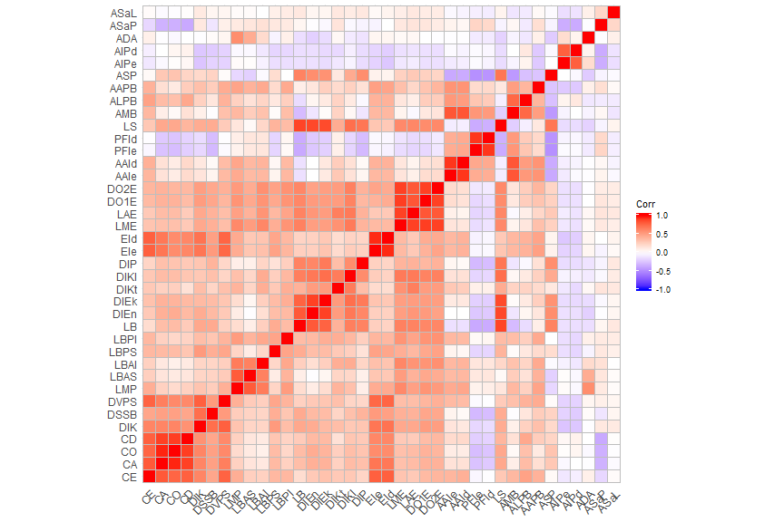
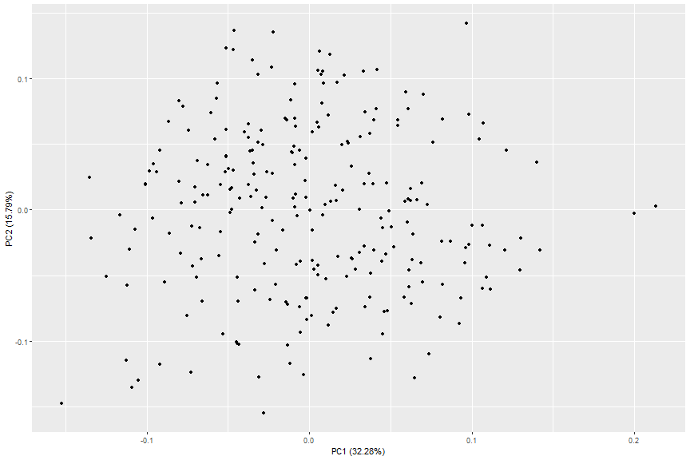
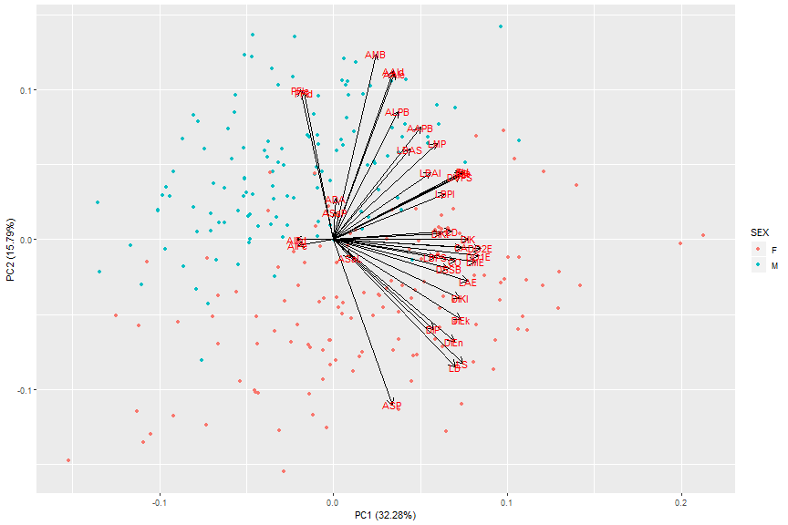
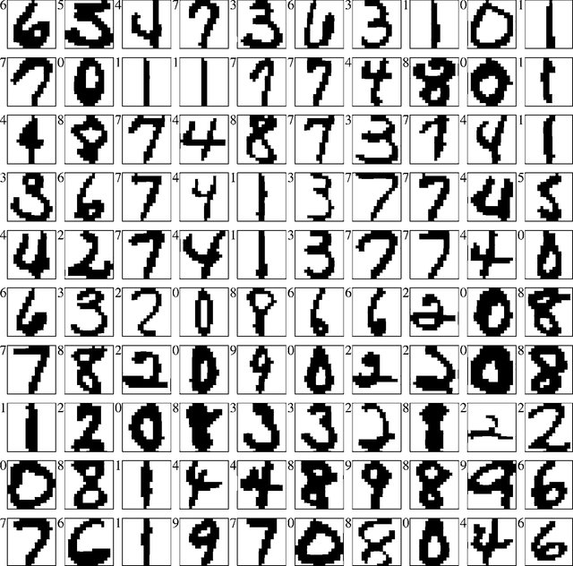

Dimensionality - quick intro
In a "tidy" dataset each column is a variable and each row contains observations
- Dimension: Any feature (i.e. variable) in a dataset
- Dimensionality: Number of features in a dataset.
cad <- readRDS("./cadoes.rds") # dataset with measurements from pelvic bones
dim(cad)
## [1] 251 40
names(cad) # your can use scr() or summary() to have a better look at the data
## [1] "ID" "SEX" "CE" "CA" "CO" "CD" "DIK" "DSSB" "DVPS" "LMP"
## [11] "LBAS" "LBAI" "LBPS" "LBPI" "LB" "DIEn" "DIEk" "DIKt" "DIKI" "DIP"
## [21] "EIe" "EId" "LME" "LAE" "DO1E" "DO2E" "AAIe" "AAId" "PFIe" "PFId"
## [31] "LS" "AMB" "ALPB" "AAPB" "ASP" "AIPe" "AIPd" "ADA" "ASaP" "ASaL"
cadoes <- na.omit(cad[ , -c(1:2)]) # only the numbers (hip measurements)
Curse of dimensionality
- As data dimensionality grows → the feature space grows faster
Why do we care?
- Sparse feature space
- Bigger computational costs
- Model accuracy decreases
- Difficult to interpret data in high-dimensional spaces
Think again about our CADOES dataset - osteomics.com/CADOES
cadPC <- prcomp(cadoes, center = TRUE, scale. = TRUE)
In R we can use prcomp() or princomp() functions, for performing a principal components analysis on the given data matrix.
There are many other options as well in packages, like FactoMineR
Principal Component Analysis (PCA)
Advantages
- Removes noise introduced by correlation
- Changes the coordinate system
- Establishes new features (i.e. "components")
- Reduces the dimensionality of the data
The algorithm in 5 steps
- mean normalization
- feature scaling (optional)
- Rotation (principal components as axis)
- Projection
- Reduce n-dimension to k (retain x% of variance)
Curse of dimensionality: Collinearity
library(ggcorrplot)
ggcorrplot(cor(cadoes))

- Are all those variables equally important to understand the dataset?
- Are there latent dimensions that could represent the dataset using less dimensions?
Dimensionality reduction
- Observed features can obscure the hidden instrinsic dimensionality of a dataset (which can be much smaller).
library(ggfortify) # allows ggplot2 to understand prcomp() objects.
autoplot(cadPC)

Dimensionality reduction: but does it work?
autoplot(cadPC, data = cad, colour = "SEX", loadings = TRUE,
loadings.colour = "black", loadings.label = TRUE)

Solving the Curse of Dimensionality
- Feature engineering (requires domain knowledge)
- Dimensionality reduction algorithms (to remove redundancy)
Dimensionality reduction: it is not just about PCA
Matrix factorization
- Principal Component Analysis;
- Linear Autoencoder;
- Latent Dirichlet Allocation;
- Non-negative Matrix Factorization;
- Generalised Low Rank Models;
- Word2Vec;
- GloVe
Neighbour graphs
- Laplacian Eigenmaps;
- Hessian Eigenmaps;
- Local Tangent Space Alignment;
- JSE,
- Isomap;
- Locally Linear Embedding;
- t-SNE; (state-of-the art since 2008)
- UMAP (new kid on the block)
Let's play!

Open computer_vision.R